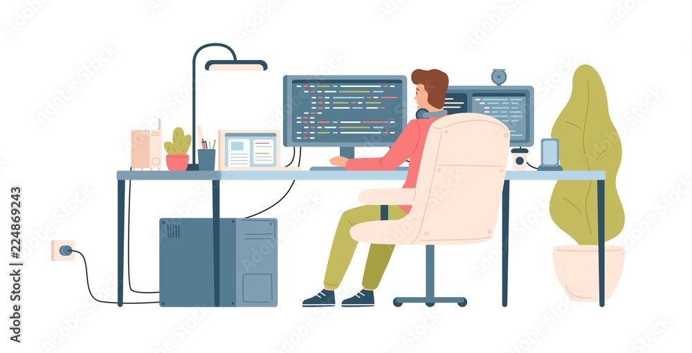
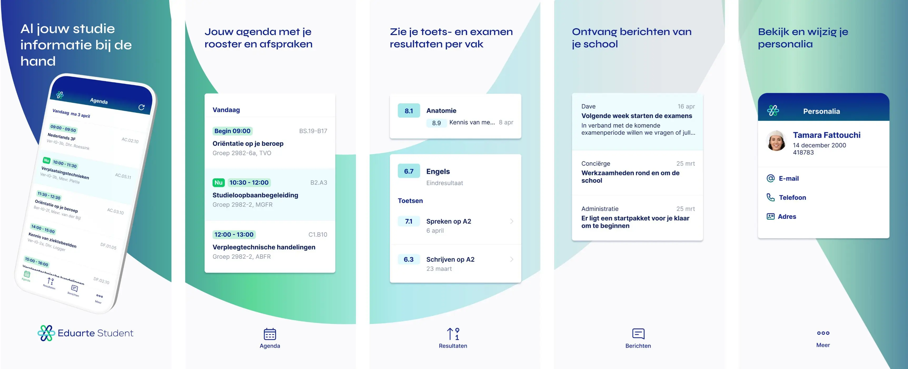

Welkom op onze website! Hier vind je uitgebreide informatie over Eduarte, Canvas, en het belang van keuzedelen in het onderwijs.

Eduarte
Eduarte is een studentinformatiesysteem (SIS) dat speciaal ontwikkeld is voor het mbo-onderwijs in Nederland. Het systeem ondersteunt scholen in het beheren van hun administratieve processen. Dit omvat zaken zoals de inschrijving van studenten, het vastleggen van aanwezigheid, de communicatie tussen studenten en docenten, en het bijhouden van cijfers en voortgang. Met Eduarte kunnen docenten eenvoudig lessen plannen, toetsresultaten invoeren, en rapportages maken.

Canvas
Canvas is een populair Learning Management System (LMS) dat door veel scholen en universiteiten wereldwijd wordt gebruikt. Canvas biedt studenten en docenten een centrale plek om opdrachten, lesmaterialen, toetsen en communicatie te beheren. Docenten kunnen via Canvas eenvoudig opdrachten klaarzetten, feedback geven en toetsen inplannen. Studenten hebben toegang tot alle relevante leermaterialen, kunnen hun voortgang bijhouden en samenwerken met klasgenoten in verschillende projecten.
Keuzedelen
Keuzedelen zijn een belangrijk onderdeel van het mbo-onderwijs in Nederland. Studenten hebben de mogelijkheid om tijdens hun opleiding te kiezen uit een reeks extra vakken of modules die aansluiten bij hun interesses of toekomstige beroep. Deze keuzedelen bieden studenten de kans om hun vaardigheden verder uit te breiden en zich te specialiseren in een specifiek vakgebied. Ze zijn een verplicht onderdeel van het curriculum en bieden studenten de mogelijkheid om zich te onderscheiden in hun vakgebied of om aanvullende certificeringen te behalen.